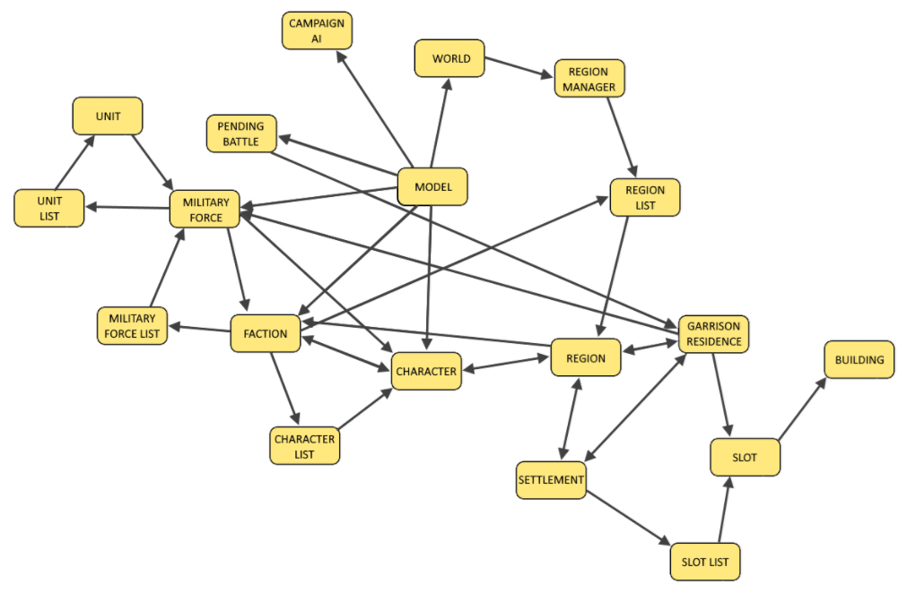

Model Hierarchy
Quick link to the external model hierarchy documentation: Model Hierarchy
The model hierarchy provides script with a mechanism to query and browse game objects. Model hierarchy objects that represent game entities such as factions, regions or military forces may be accessed by script, usually through event contexts. Each model hierarchy object provides an interface on which calls may be made to query that object. For example, a faction may be queried to determine its name, a settlement may be queried to determine its position, or a military force may be queried to determine its current stance.
In many cases objects may also be queried to access related objects. For example, each faction object provides a faction_leader method which can be called to return a character object representing the faction leader character of that faction. This character object can then be queried like any other character object, including being asked for other related objects such as the military force commanded by the character or the region the character is stood in.
A list of model hierarchy interfaces is given further down this page. To see the list of functions they each provide, visit the external documentation. Each interface section on this page provides a link to the relevant section of the external model hierarchy documentation.
In most circumstances the model hierarchy is read-only. Changes to the game cannot be made through model hierarchy functions - see the episodic_scripting interface for a list of code-provided functions that can effect changes the game model. Certain exceptions exist, such as the modify-ritual interfaces.
The following image illustrates many of the main objects provided by the model hierarchy and how they link together. It is by no means authoritative! See the further down this page, or external documentation, for a full list.

| Loaded in Campaign |
|
| Loaded in Battle |
|
| Loaded in Frontend |
|
The model hierarchy is accessed mainly through event contexts. When an event is triggered by the campaign model it provides a context object to any listener scripts that gets called. This context object can provides one or more objects within the model hierarchy, each of which represent objects in the game such as a faction, a settlement, or a character. For example, the context of the FactionTurnStart event provides a faction object representing the faction that is starting its turn, whereas the CharacterLootedSettlement object provides both a character and settlement object.
A list of events and what methods the related context object provides can be found in the external model hierarchy documentation. A list of the various objects that the model hierarchy provides is also given further down this page.
As well as accessing through event contexts, the model script interface which underpins the rest of the model hierarchy may also be accessed at any time by calling cm:model on the episodic_scripting interface.
Example - Accessing the model hierarchy through the FactionTurnStart event:
core:add_listener(
"example_faction_turn_start_listener",
"FactionTurnStart",
true,
function(context)
-- access the faction starting its turn
local faction = context:faction();
-- retrieve a character script interface representing the faction's leader
local faction_leader = faction:faction_leader();
-- output some information about the faction starting its turn and the location of the faction leader
out("* faction " .. faction:name() .. " is starting its turn, faction leader is at [" .. faction_leader:logical_position_x() .. ", " .. faction_leader:logical_position_y() .. "]");
end,
true
);
faction wh3_main_ksl_the_ice_court is starting its turn, faction leader is at [418, 118]
Example - Accessing the model directly:
local model = cm:model();
out("There are currently " .. model:world():faction_list():num_items() .. " factions in the game");
There are currently 108 factions in the game
Objects retrieved from the model hierarchy in script are imperminent should not be stored for reference later in time. The game reserves the right to delete objects from memory from time to time, so a model hierarchy object stored over time may find itself invalidated. It is safe to use an object reference taken as a local variable on the tick on which it was taken, unless something happens on that tick to invalidate it (e.g. taking a character reference and then killing it - the character reference is no longer safe to use).
If it is required to access a model hierarchy object over time, then a permanent reference by which the object may be looked up should be stored in place of the object itself. This is often the command-queue index (a unique id for each object of a certain type) but can be a string key.
Example - Bad script that tries to use a reference to an object over time:
This script may work some of the time, but is not safe and will cause intermittent failures on some machines.
-- get a faction
local faction = cm:get_faction("wh_main_emp_empire")
out("The Empire have " .. faction:num_allies() .. " allies")
randomise_alliances()
-- wait one second, and try and re-access faction (BAD)
cm:callback(
function()
out("After randomising alliances, The Empire have " .. faction:num_allies() .. " allies")
end,
1
)
Example - Good script that looks up the faction by key each time it's used over time:
-- get a faction
local faction_key = "wh_main_emp_empire"
local faction = cm:get_faction(faction_key)
out("The Empire have " .. faction:num_allies() .. " allies")
randomise_alliances()
-- wait one second, look up the faction again from its key and use the new reference (GOOD)
cm:callback(
function()
local faction = cm:get_faction(faction_key)
out("After randomising alliances, The Empire have " .. faction:num_allies() .. " allies")
end,
1
)
Active Ritual List
A list of active_ritual script interfaces. This list is mainly accessed from the faction_rituals script interface.
Active Ritual
The active ritual interface represents a ritual, previously cast by a faction, that is currently still active.
Ancillary List
A list of ancillary interfaces.
Ancillary
The ancillary interface provides functionality related to an ancillary character. The interface is provided by the CharacterAncillaryGained script event.
Battle Results
Provides an interface to battle results.
BATTLE_RESULTS_SCRIPT_INTERFACE
is_null_interfaceare_finalisedattacker_wondefender_wonis_drawwinning_faction_keylosing_faction_keyattacker_main_army_start_unitsdefender_main_army_start_unitsattacker_main_army_alive_unitsdefender_main_army_alive_unitsattacker_start_number_of_mendefender_start_number_of_menattacker_casualtiesdefender_casualtiesside_has_dead_unit_of_setdid_winner_primary_general_surviveburnt_buildings_in_battle_number
Bonus Values
The bonus values script interface provides access to bonus values for a campaign object such as a character or faction.
BONUS_VALUES_SCRIPT_INTERFACE
agent_valuebasic_valuebuilding_chain_valueprojectile_valueprojectile_shot_type_valuereligion_valuesubculture_valuefaction_valueresource_valueunit_ability_valuearmy_special_ability_valueritual_valueritual_chain_valueunit_attribute_valueunit_category_valueunit_class_valueunit_caste_valuemain_unit_valuebattlefield_deployable_siege_item_valuetechnology_category_valuetechnology_valueaction_results_additional_outcome_valueprovince_initiative_effect_valuedeployable_valuebuilding_level_valueprovince_initiative_valueagent_action_valuecampaign_map_attrition_valuename_valueagent_subtype_valuespecial_ability_phase_valueloyalty_event_effect_valuepooled_resource_factor_junction_valuepooled_resource_valuescripted_value
Building List
A list of building script interfaces. This is accessible from the garrison_residence script inteface.
Building
A building script interface represents a building constructed in a slot within a settlement.
Campaign AI
The campaign AI script interface provides functionality related to AI systems. It is accessible from the model script interface.
CAMPAIGN_AI_SCRIPT_INTERFACE
is_null_interfacestrategic_stance_between_factionsstrategic_stance_between_factions_availablestrategic_stance_between_factions_promotion_or_blocking_is_setstrategic_stance_between_factions_promotion_is_activestrategic_stance_between_factions_promotion_current_levelstrategic_stance_between_factions_promotion_start_roundstrategic_stance_between_factions_promotion_start_levelstrategic_stance_between_factions_promotion_end_roundstrategic_stance_between_factions_promotion_end_levelstrategic_stance_between_factions_is_being_blockedstrategic_stance_between_factions_is_being_blocked_until
Campaign Mission
A campaign mission script interface represents an active mission in campaign. Not currently used.
Character Details List
A list of character_details script interfaces. Each character_details script interface is a persistent reference to a character.
Character Details
A character details interface is a persistent interface related to character. While the character interface related to an immortal character in game can be destroyed and recreated with a new command-queue-index value, the related character_details interface does not change cqi.
Character List
A list of character script interfaces.
Character
The character script interface represents a character in campaign. This is a key interface which is provided by many events and other interfaces in the model hierarchy.
CHARACTER_SCRIPT_INTERFACE
is_null_interfacehas_garrison_residencehas_regionhas_military_forcemodelgarrison_residencefactionregionsea_regionregion_datamilitary_forceforenamesurnameget_forenameget_surnameonscreen_namein_settlementin_portis_besiegingis_blockadingis_carrying_troopsis_in_motioncharacter_typecharacter_type_keycharacter_subtypecharacter_subtype_keyhas_traithas_display_traittrait_pointshas_ancillaryhas_ancillary_equippedancillariesget_ancillarybattles_foughtaction_points_remaining_percentaction_points_per_turnis_maleageperformed_action_this_turnhas_retreated_this_turnis_ambushingturns_at_seaturns_in_own_regionsturns_in_enemy_regionsis_faction_leaderrankexperience_required_for_rank_upexperience_required_for_rankdefensive_sieges_foughtdefensive_sieges_wonoffensive_sieges_foughtoffensive_sieges_wonfought_in_battlewon_battlepercentage_of_own_alliance_killedministerial_positionlogical_position_xlogical_position_ydisplay_position_xdisplay_position_ybearingbattles_wonoffensive_battles_wonoffensive_battles_foughtdefensive_battles_wondefensive_battles_foughtoffensive_naval_battles_wonoffensive_naval_battles_foughtdefensive_naval_battles_wondefensive_naval_battles_foughtoffensive_ambush_battles_wonoffensive_ambush_battles_foughtdefensive_ambush_battles_wondefensive_ambush_battles_foughtcqiis_embedded_in_military_forceembedded_in_military_forcehas_skillunassigned_skill_pointsis_hiddenis_deployedhas_recruited_mercenariesrouted_in_battlebody_guard_casultiesnumber_of_traitstrait_levelgravitasloyaltyis_loyalty_applicableinterfaction_loyaltyhas_fatherhas_motherfathermotherfamily_membercharacter_detailscommand_queue_indexis_politicianpost_battle_ancillary_chancescripted_time_to_leaveis_casteris_visible_to_factioncan_equip_ancillaryis_at_seais_woundedis_immortaleffect_bundlescommanded_unithas_assigned_office_this_rounduniform_nametotal_max_experiencepercent_of_total_max_experience_gainedcurrent_xp_in_percentrebel_general_subculturebonus_valuesget_overlapping_enemy_zocshas_special_character_skin_equippedattribute_level
Custom Resource Cost
The custom resource cost script interface represents a cost in resources. Once created using the episodic_scripting function cm:create_new_custom_resource_cost, the object can be customised and can be used for various purposes.
Custom Unit
The custom unit script interface can be used to set up a custom unit type. A object with this interface is returned by the episodic_scripting function cm:create_custom_unit_from_key.
CUSTOM_UNIT_SCRIPT_INTERFACE
is_null_interfaceadd_stat_bonusesadd_custom_attributesadd_custom_recruitment_costadd_custom_upkeep_costadd_name_prefixadd_custom_officer_vmdadd_mercenary_recruit_dataadd_custom_idbase_unit_tierset_champion_flagset_gifted_by_faction_cqiset_can_be_recruited_in_foreign_territoryset_recruitment_manager
Custom Effect Bundle
The custom effect bundle interface allows customisation of an existing effect bundle record. The record must be defined in the effect_bundles database table.
Debug Drawing
An interface providing some functionality to draw debug lines. This object will not be available in the retail version on the game.
Effect Bundle List
A list of effect_bundle interfaces.
Effect Bundle
An effect bundle is a collection of effect modifiers, and can be applied to many types of game objects.
Effect List
A list of effect interfaces.
Effect
An effect that provides bonus values via a scope. These can be applied to game objects to produce in-game modifications, usually via an effect_bundle.
Faction List
A list of faction interfaces.
Faction Rituals
The faction rituals interface provides access to lists of rituals associated with a faction.
Faction
The faction script interface represents an in-game faction. This is a key interface and is provided by many events and other interfaces.
FACTION_SCRIPT_INTERFACE
is_null_interfacenum_regionsregion_listcharacter_recruitment_pool_listcharacter_listmilitary_force_listmodelis_humannamelocalised_display_namehome_regionfaction_leaderhas_faction_leaderhas_home_regionstarted_war_this_turnended_war_this_turnancillary_existsancillary_poolget_ancillary_from_poolnum_alliesat_warallied_withmilitary_allies_withdefensive_allies_withis_vassal_ofis_subject_ofis_ally_vassal_subject_or_client_state_ofget_protectorget_masterget_sovereignat_war_withtrade_resource_existstrade_valuetrade_value_percentunused_international_trade_routetrade_route_limit_reachedsea_trade_route_raidedtrade_ship_not_in_trade_nodetreasurytreasury_percentlosing_moneytax_levelupkeep_expenditure_percentresearch_queue_idleactive_research_remaining_turnshas_technologystate_religionnum_generalsculturesubculturehas_food_shortageimperium_leveldiplomatic_standing_withdiplomatic_attitude_towardsis_excluded_from_cai_diplomacyfactions_non_aggression_pact_withfactions_defensive_alliance_withfactions_military_alliance_withfactions_trading_withfactions_bartering_withfactions_at_war_withfactions_master_offactions_sovereign_offactions_metfactions_of_same_culturefactions_of_same_subcultureconfederation_in_progressget_foreign_visible_characters_for_playerget_foreign_visible_regions_for_playercommand_queue_indexis_quest_battle_factionholds_entire_provinceis_vassalis_subjectis_deadis_rebelis_majortotal_foodfood_productionfood_consumptionget_food_factor_valueget_food_factor_base_valueget_food_factor_multiplierunique_agentshas_effect_bundlehas_ritualshas_trade_agreement_withhas_trade_agreements_only_withbuilding_existsritualshas_faction_slavesnum_faction_slavesmax_faction_slavespercentage_faction_slavesget_climate_suitabilitypooled_resourcespooled_resourcepooled_resource_display_namecan_afford_resource_costcan_afford_resource_cost_objecthas_pooled_resourcehas_ritual_chainhas_access_to_ritual_categoryattitude_tier_for_godforeign_slot_managerseffect_bundlesget_effect_bundleget_effect_valuestrengthflag_pathaverage_religion_proportionattitude_category_withnum_provincesexotic_goodsbarter_agreementsattitude_withprovince_listtradeable_regionsmission_is_activemission_has_succeededmission_was_canceledmission_has_expiredhas_pool_entry_for_forenameis_supply_points_feature_availablecan_afford_custom_resource_costbonus_valuesis_allowed_to_capture_territoryall_available_building_chainsis_pharaoh_game_factionfree_instant_constructionsfree_embed_informantsis_garrison_residence_position_visible_to_shroudis_character_position_visible_to_shroud
Family Member List
A list of family_member interfaces.
Family Member
The family member script interface represents a character within a family tree. This interface is persistent, even if the related character is destroyed and recreated.
Foreign Slot List
A list of foreign_slot interfaces.
Foreign Slot Manager List
A list of foreign_slot_manager interfaces.
Foreign Slot Manager
A foreign slot manager has ownership of all foreign_slot objects for a faction within a settlement/region. A manager is returned by the various foreign-slot-related events, and from the region script interface.
Foreign Slot
A foreign slot is a building slot owned by a faction in a foreign settlement. This underpins mechanics such as Chaos Cults and Skaven Under-Empires. A foreign slot is owned by a foreign_slot_manager.
Garrison Residence
The garrison residence script interface represents the garrison residence within a settlement. It can be queried to determine information about any military_force present within the garrison, or the siege status of the settlement. There is only one settlement/garrison residence in each region.
God Manager
The god manager script interface grants access to god-related functionality, such as gods and any conflicts between them.
God
A god script interface provides functionality related to a particular god within the god system.
God List
A list of god interfaces.
Military Force Building
A building associated with a horde-type military_force.
Military Force Building List
A list of military_force_building interfaces.
Military Force List
A list of military_force interfaces.
Military Force
A military force interface represents any army or navy on the campaign map, including garrison armies. This is a key interface.
MILITARY_FORCE_SCRIPT_INTERFACE
is_null_interfacehas_generalis_armyis_navymodelunit_listcharacter_listgeneral_characterfactionhas_garrison_residencegarrison_residencecontains_mercenariesupkeepactive_stancecan_activate_stancemoraleis_armed_citizenrycan_recruit_agent_at_forcecan_recruit_unitcan_recruit_unit_classcan_recruit_unit_categorystrengthforce_typecommand_queue_indexhas_effect_bundleeffect_bundlesget_effect_bundlebuildingsbonus_valuesget_siegehas_retreated_this_turnis_able_to_assault_immediately_on_siege_startwill_suffer_any_attritionget_horde_development_pointsis_horde
Military Force Slot
A military force slot interface represents a building slot within a horde-type military_force.
Military Force Slot List
A list of military_force_slot interfaces.
Model
The model script interface is the root object of the model hierarchy. It is accessible from many other objects, and can be accessed at any time by calling cm:model.
MODEL_SCRIPT_INTERFACE
is_null_interfaceworldpending_battledate_in_rangedate_and_week_in_rangeturn_numberunit_scale_ratiocampaign_namecampaign_name_keyrandom_percentrandom_intis_multiplayercampaign_type_stringare_factions_coop_alliesis_player_turncharacter_can_reach_charactercharacter_can_reach_settlementdifficulty_levelcombined_difficulty_levelfaction_is_localplayer_steam_id_is_oddcampaign_aicampaign_typeget_campaign_variable_by_namecharacter_for_command_queue_indexlookup_characterfamily_member_for_command_queue_indexmilitary_force_for_command_queue_indexfaction_for_command_queue_indexregion_for_command_queue_indexunit_for_command_queue_indexgarrison_residence_for_command_queue_indexsettlement_for_command_queue_indexregion_slot_for_command_queue_indexhas_character_command_queue_indexhas_family_member_command_queue_indexhas_military_force_command_queue_indexhas_faction_command_queue_indexhas_region_command_queue_indexhas_unit_command_queue_indexhas_garrison_residence_command_queue_indexget_ancillary_icon_from_recordget_ancillary_onscreen_name_from_recordget_unit_record_infocurrent_season_namecurrent_season_keyget_economy_resource_keysis_start_turn_autosave_pendingshared_states_managerlogical_position_for_display_positiondisplay_position_for_logical_positiondebug_drawinghas_pending_action
Null Script Interface
An empty interface, returned in situations where a requested interface doesn't exist.
Pending Battle
The pending battle script interface represents a currently-active battle sequence. The battle may or may not have taken place yet. A pending battle object may be retrieved from various battle-related script events and from the model interface.
PENDING_BATTLE_SCRIPT_INTERFACE
is_null_interfacehas_attackerhas_defenderhas_contested_garrisonhas_regionlogical_position_xlogical_position_ymodelattacker_factionattackersecondary_attackersdefender_factiondefendersecondary_defenderscontested_garrisonregionis_activeconflict_completedattacker_is_strongerattack_side_lossesdefense_side_lossespercentage_of_attacker_killedpercentage_of_defender_killedpercentage_of_attacker_routedpercentage_of_defender_routedattacker_commander_fought_in_battledefender_commander_fought_in_battleattacker_commander_fought_in_meleedefender_commander_fought_in_meleeattacker_wondefender_wonis_drawattacker_battle_resultdefender_battle_resultnaval_battleseige_battleis_minor_settlement_battleis_major_settlement_battleriver_battlemountain_chokepointambush_battlefailed_ambush_battlenight_battleis_quest_battlebattle_typebattle_namebattle_record_keyloading_screen_title_overridebattle_region_keyattacker_strengthdefender_strengthhas_been_foughtset_piece_battle_keybattle_resultschallenge_battleregion_datalogical_positiondisplay_positionautoresolve_selected
Pooled Resource Factor List
A list of pooled_resource_factor interfaces.
Pooled Resource Factor
A pooled resource factor is a means by which a pooled resource may be modified. These are listed in the pooled_resource_factors database table.
Pooled Resource List
A list of pooled_resource interfaces.
Pooled Resource
A pooled resource script interface represents a pooled resource, a design-driven currency of some kind like Oathgold, Grimoires, Skulls etc. Valid pooled resources are listed in the pooled_resources database table.
Province List
A list of province interfaces.
Province Manager
A province manager provides a script interface to access provinces in a list or by key.
Province
A province script interface represents a province on the campaign map, containing one or more regions represented by region script interfaces.
Region Data List
A list of region_data interfaces.
Region Data
A region data represents the base data for a region on the campaign map. This may or may not be represented by a region or sea_region.
Region List
A list of region interfaces.
Region Manager
The region manager is a top-level object which provides information about regions and settlements on the campaign map.
Region
A region interface represents a region on the campaign map. A region is the land area associated with a settlement, and there are one or more regions within each province. The region script interface is a key interface, and is provided by many different script events and other interfaces.
Each region is associated with a region_data script interface, which are also linked to sea_region interfaces.
REGION_SCRIPT_INTERFACE
is_null_interfacemodelowning_factionslot_listsettlementgarrison_residencenameprovince_namecommand_queue_indexprovincepublic_ordernum_buildingsslot_type_existsbuilding_existslast_building_constructed_keyresource_existsany_resource_availablepooled_resource_incomeprovince_pooled_resource_incometown_wealth_growthadjacent_region_listadjacent_region_list_traversablemajority_religionregion_wealth_change_percentbuilding_superchain_existshas_governorgovernorsqualorsanitationis_abandonedreligion_proportioncan_recruit_agent_at_settlementfaction_province_development_pointsfaction_province_growthfaction_province_growth_per_turnis_province_capitalhas_development_points_to_upgradehas_faction_province_slavesnum_faction_province_slavesmax_faction_province_slavespercentage_faction_province_slaveshas_active_stormregion_data_interfaceget_selected_edict_keyget_active_edict_keyforeign_slot_managersforeign_slot_manager_for_factioneffect_bundleshas_effect_bundleget_effect_bundlefaction_province_effect_bundlescharacters_in_regionsupply_pointslocalised_display_namebonus_valuessize_of_enemy_forces
Resource Transaction
The resource cost of a transaction. Currently associated with an active_ritual interface, indicating the cost of that ritual when performed.
Sea Region List
A list of sea_region interfaces.
Sea Region Manager
A central interface which can be queried for information about sea_region entities in the game. This interface can be accessed from the world script interface.
Sea Region
An interface representing a region of sea. This is linked to a region_data interface.
Settlement
A settlement interface represents a settlement on the campaign map. It is most-commonly accessed through the region interface, and is also related to the garrison_residence interface.
SETTLEMENT_SCRIPT_INTERFACE
is_null_interfacekeycommand_queue_indexhas_commanderlogical_position_xlogical_position_ydisplay_position_xdisplay_position_yzone_of_control_radius_landmodelcommanderfactionregionslot_listis_portget_climatebuilding_listburned_buildings_percentcan_possibly_build_units_from_setproduction_typeprimary_slotport_slotactive_secondary_slotsfirst_empty_active_secondary_slot
Shared States Manager
A central interface, accessed through the model interface, which can be used to query shared state values. Shared state values are accessible by the campaign model, UI and script, and can be used to empower functionality shared between all three. See also the Shared States section of the episodic_scripting documentation.
Siege
An interface representing an active siege. This can
Slot List
A list of slot interfaces.
Slot
A slot interface represents a building slot in a settlement, within which a building may be constructed (or may already exist). It is related to the military_force_slot interface which represent a building slot within a horde-type military_force.
SLOT_SCRIPT_INTERFACE
is_null_interfacehas_buildinglogical_position_xlogical_position_ydisplay_position_xdisplay_position_ymodelregionbuildingfactiontypenametemplate_keyresource_keyslot_keyis_there_constructionconstruction_building_level_record_nameconstruction_building_level_record_levelconstruction_building_chain_keyconstruction_building_chain_categoryconstruction_building_chain_superchainconstruction_building_time_to_completiongarrison_residenceis_infrastructure_slotis_fortis_refugee_campmax_garrison_unitscommand_queue_indexactive
Unique Agent Details List
A list of unique_agent_details interfaces.
Unique Agent Details
An interface representing the details of a unique agent, such as the Green Knight. A faction interface may be queried for a unique_agent_details_list of unique agents the faction contains. Furthermore, objects with this interface are returned by various unique-agent-related script events.
Unit List
A list of unit interfaces.
Unit
An interface that represents a unit belonging to a military_force.
UNIT_SCRIPT_INTERFACE
is_null_interfacecommand_queue_indexhas_force_commanderhas_unit_commanderis_land_unitis_naval_unitmodelforce_commanderunit_commandermilitary_forceunit_keyunit_categoryunit_classbelongs_to_unit_setis_rangedis_mountedfactionpercentage_proportion_of_full_strengthstart_soldiers_or_hitpointsnum_soldiers_or_hitpointscan_upgrade_unit_equipmentget_unit_stat_bonusescan_upgrade_unithas_upgradesexperience_until_next_levelget_unit_custom_battle_costhas_banner_ancillarybanner_ancillaryis_custom_unitsupply_pointsget_all_attributes
World
World is a central interface that provides access to a variety of other game objects. It is primarly accessible from the model interface.